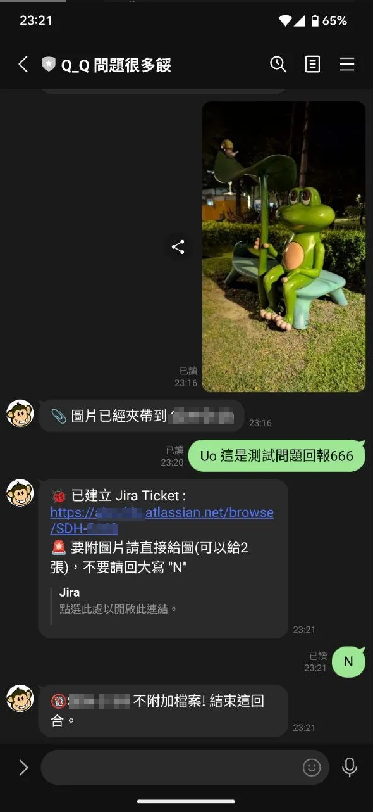

系統 Go-Live 是任何 IT 專案中最具挑戰性的階段。對於必須在第一線直接面對使用者的支援人員而言，這不僅是技術能力的考驗，更是溝通、應變與壓力管理的終極試煉。本手冊旨在提供一套結構化的戰術框架，幫助代號「羅盤」(Compass) 的你，在混亂中保持專業，有效解決問題，並最終確保系統成功導入。
第一階段：整備與心態建立
成功的應對始於充分的準備。在上線日之前，你必須完成角色定位、工具整備與回報機制建立。
1. 關鍵角色再定義
事件分類官
快速進行傷檢分類，判斷問題嚴重性，穩定使用者情緒，並即時上報系統阻斷性問題。
資訊樞紐
過濾海量回饋，將混亂場景轉化為結構化問題描述，確保後端團隊獲得精確情報。
情緒緩衝器
吸收使用者負面情緒，保護後端團隊免受干擾，讓他們能專注於技術解決方案。
2. 核心裝備清單
- 實體裝備: 識別證、舒適的鞋子、小型筆記本與筆 (以防萬一)。
- 數位裝備: 手機與滿電的行動電源、快速行動回報系統、離線 FAQ 知識庫。
3. 情報回報機制：打造零阻力的資訊高速公路
傳統的回報方式（筆記、記憶、事後登打）在混亂的Go-Live現場是災難的根源。資訊延遲、細節遺失、回報意願低落是常見痛點。一個專業的團隊應建立一個現代化的回報機制，打通前線到開發的「最後一哩路」。
理想的回報流程：LINE 即時通報
第一線人員應能透過最熟悉的工具（如LINE），以聊天、拍照的方式即時回報問題，無需離開現場或中斷與使用者的互動。
後端自動化：自動生成開發任務
回報的訊息與圖片應透過自動化流程（如n8n），在背景無縫轉換為一張資訊完整的Jira Ticket，並通知相關開發人員。
這種自動化流程能帶來顯著效益：
- 10倍效率提升： 將回報時間從數分鐘縮短至一分鐘內。
- 100%資訊保真度： 圖文並茂的即時回報，完整還原現場情境。
- 零門檻協作： 無需為所有現場人員購買Jira授權或進行培訓。
第二階段：前線交戰準則 (The 3-Minute Rule)
當使用者提出問題時，遵循 L-V-C-A-P 框架，目標在三分鐘內完成一次有效的交戰並脫身。
Listen (聆聽): 吸收資訊，而非準備反駁
- 沉默的開場: 閉嘴，專注地聽，讓使用者把第一波情緒宣洩完。
- 肢體語言: 身體微前傾（表示感興趣），有節奏地點頭（表示正在吸收）。
- 關鍵字複述: 在使用者喘息時，複述核心問題。「好的，我理解，查詢延遲超過30秒...」
Validate (驗證): 建立同理，而非製造對立
"如果我是您，遇到這種情況，我也會非常傻眼。"
"您說的完全沒錯，這個地方的設計確實不夠方便直覺。"
絕對避免："這個功能本來就是這樣設計的。"、"這是決議，我也沒辦法。" 之類的言語。
Categorize (分類): 快速診斷，對症下藥
將問題歸類為A類(操作不熟)、B類(系統問題)或C類(流程不符/功能欠缺)，並採取相應的行動劇本。以下提供幾個常見情境，供你迅速對號入座：
關鍵特徵：使用者表情困惑，常用「這個要怎麼...」、「找不到...」等問句。
行動劇本：
「護理長，別擔心，這個新功能藏得比較深。我現在操作一次給您看，您幫我看看是不是您要的。」
B1類：偶發性Bug
關鍵特徵：「剛剛還可以，現在突然不行了」、「有時候可以有時候不行」。
行動劇本：
「了解，這種偶發問題最麻煩了。您能不能回想一下，在它壞掉前，您點了什麼特別的東西嗎？ 沒關係，想不起來也正常。我已經把時間點和狀況都記錄下來了。」
B2類：可重現Bug/效能問題
關鍵特徵：每次操作都發生同樣的錯誤或延遲。
行動劇本：
「好的，這個問題我看見了。這肯定是系統的問題，不是您的操作問題。 我現在立刻用最高優先級把它上報，這個畫面您先留著，我拍張照。」
關鍵特徵：「以前可以XXX，現在為什麼不行？」、「這個流程不符合我們科室的習慣。」
行動劇本：
「您提的這一點非常重要，我猜這可能是當初設計時沒有考慮到您們科室的特殊情況。 我會把您的建議原封不動地帶回去給產品團隊，這對我們下一版改進非常有幫助。」
Act (行動): 展現進度，給予信心
行動是最好的安撫劑。當著使用者的面，打開回報工具大聲念出處理步驟。此外，提供「短期止痛藥」(Workaround)：
- 提供替代方案: 「在問題釐清前，我們可以先處理另一個個案嗎？」或「這個功能我們先用手工單處理，我會確保資料之後補上。」
- 若無替代方案: 誠實地承認。「這個問題目前沒有替代方案，唯一的辦法就是等系統修復。我會在 15 分鐘內跟您回報初步處理方式，就算沒有進度，我也會來跟您說一聲。」
Promise (承諾): 設定預期，優雅退場
給出具體、可執行的承諾，並透過「請求許可」的方式脫身：
"我已經通報給後端的負責人陳工程師了，我半小時後會再回來向您同步處理進度。那麼，這個問題我先送上去讓他們開始跑，我先去護理站那邊看看，可以嗎？"
第三階段：危機溝通與壓力管理
1. 非語言溝通策略
在面對激烈情緒時，你的身體就是盾牌：
- 姿態: 不要站得直挺挺（具對抗意味）。稍微側身45度，用肩膀對著他。
- 距離: 保持約1.5公尺的社交距離，不要入侵對方個人空間。
- 手勢: 雙手絕不抱胸。自然下垂或一手拿筆記本，手心可適時朝上表示沒有惡意。
2. 公開場域的應對劇本
策略一：成為盟友
將自己與使用者劃在同一陣線。「您說的對，這個環節的表現簡直不可思議。您能不能再具體跟我說一次？我要把您的原話，一字不漏地貼給寫這段程式的工程師看。」
策略二：冷靜的專家
用條列式拆解情緒，並將焦點轉移到「解決當下」。先轉向旁邊的病人微笑說：「不好意思，新系統剛上線，讓您久等了。」再轉回使用者，壓低聲音說：「醫師，現在最重要是讓門診繼續，我們能不能先...」
3. 戰後心理恢復機制 (Self-Debrief)
在高壓環境下，快速的心理重置至關重要。在處理完一次激烈衝突後，給自己兩分鐘：
- 生理重置 (30秒): 進行三次「4-4-6深呼吸」（吸氣4秒，憋氣4秒，吐氣6秒）。
- 認知重構 (60秒): 進行自我對話：「這不是針對個人的攻擊。我專業地控制了場面。」
- 焦點轉移 (30秒): 將注意力轉移到下一個具體任務上。
結論
第一線的成功，奠基於充分的準備、結構化的應對框架、以及強大的心理素質。透過本文提出的戰術，你將不僅僅是在「存活」，而是在為系統的成功落地貢獻不可或缺的專業價值。記住，你的堅韌，就是系統的韌性。